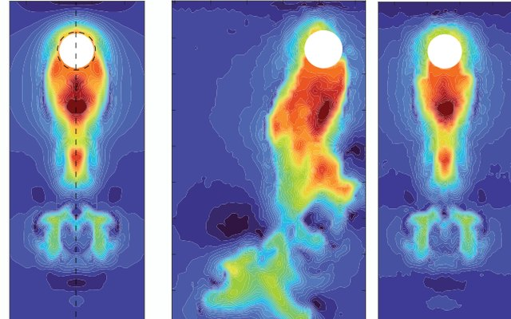

Diagnostics & reconstruction · 2026
View research Boundary-aware velocity reconstruction
A physics-constrained reconstruction method that accounts for moving solid boundaries when converting volumetric particle tracks into gridded velocity fields.
Measurement Science and Technology · Published